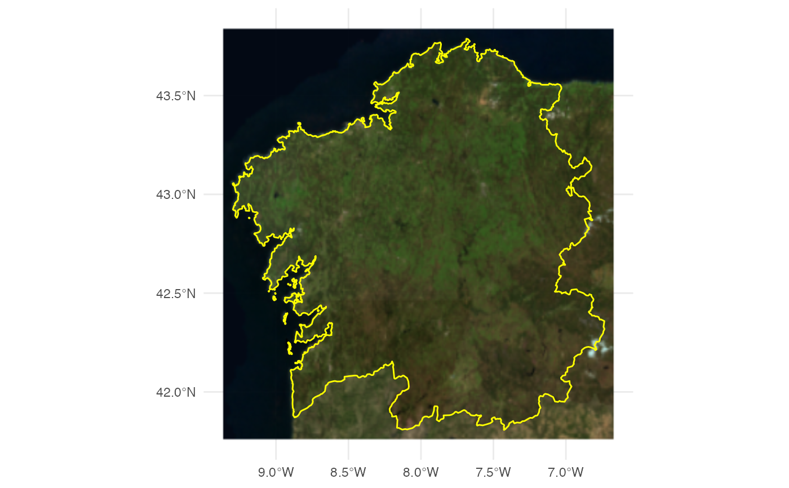

This is a wrapper of ggspatial::layer_spatial.Raster() that works with
SpatRaster objects.
This function is likely to be deprecated in the future when ggspatial
(or any other package) provides native support to SpatRaster on
ggplot. See also https://github.com/paleolimbot/ggspatial/issues/91
Other packages that supports natively SpatRaster:
layer_spatraster(data, ...)
Arguments
| data | A |
|---|---|
| ... | Arguments passed on to
|
Value
A ggplot2 layer
Details
This function requires both ggspatial and raster packages.
You can install both running
install.packages("ggspatial", dependencies = TRUE)
See also
ggspatial::layer_spatial.Raster(), raster::stack().
Other imagery utilities:
addProviderEspTiles(),
esp_getTiles(),
leaflet.providersESP.df
Examples
# \donttest{ # Get a SpatRaster x <- esp_get_ccaa("Galicia") tile <- esp_getTiles(x, "PNOA") class(tile)#> [1] "SpatRaster" #> attr(,"package") #> [1] "terra"library(ggplot2) ggplot(x) + layer_spatraster(tile) + geom_sf(color = "yellow", fill = NA) + theme_minimal()#> Warning: Discarded datum Unknown based on GRS80 ellipsoid in Proj4 definition
# }
Site built with pkgdown 1.6.1.
Template by Bootstrapious . Ported to pkgdown by dieghernan.